|
Juste Belmont
ในตอนเริ่มต้น Juste จะมีความสามารถเพียงไม่กี่อย่างเท่านั้น
กด "L" จะพุ่งตัวไปด้านซ้าย
กด "R" จะพุ่งตัวไปด้านขวา
และใช้อาวุธเสริมได้ทุกชนิด แต่ยังไม่สามารถใช้ร่วมกันเวทย์มนต์ได้
แต่ไม่สามารถ "สไลด์" หรือ "Double Jump" หรือ "Jump
Kick" หรือ "High Jump" ได้
ต้องเก็บ Relic ให้ได้เสียก่อน จึงจะมีความสามารถต่างๆ เพิ่ม
ให้ดูตาม แผนที่
ประกอบ
(* หมายเหตุ แผนที่อ้างอิงไปที่เว็บของ Gamefaqs.com)
(หากดูแผนที่แบบละเอียดจาก Gamefaqs ไม่ได้ให้ดูที่นี่ Map)
ค้นหา Lizard Tail
ปราสาท A
- เริ่มต้นจะเก็บ Soul Orb ได้ ซึ่งจะทำให้เห็นความเสียหายที่เกิดขึ้นกับศัตรูได้
- หากเจอสถานที่ที่ไม่สามารถไปได้ ให้จดบันทึกไว้ด้วย
เช่น เจอทางแคบๆ ต้องใช้ Slide เข้าไป ก็ให้จดบันทึกไว้ เดี๋ยวจะลืม (รอ
Lizard Tail)
เจอที่สูงๆ ที่ต้องกระโดดสองครั้ง ก็จดไว้ (รอ Sylph
Feather)
เจอกำแพงที่มีรอยร้าว ก็จดไว้ (รอ Crushing Stone)
เจอทางที่กระโดดสองครั้งไม่ถึง ก็จดไว้ (รอ Griffin's
Wing)
- ต่อมาจะเจอ Lizard Tail ที่ห้องด้านซ้ายหลังจากจัดการ
Living Armor ได้
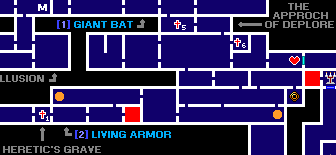
ซึ่งจะทำให้สามารถ "สไลด์" เข้าไปในที่แคบๆ ได้
เมื่อ Slide ได้แล้วให้ไปเก็บ Item ในสถานที่ต้อง Slide ไป
- ในระหว่างนั้นจะสามารถเก็บ Fairy Journal
ทำให้เห็นชื่อของศัตรูที่เราโจมตีไป
- และสามารถเก็บ Monster Tome ทำให้เข้าโหมด
Encyclopedia ได้
ค้นหา Sylph Feather
ปราสาท B
- เมื่อลงไปถึง Cave of Skeleton หลังจากจัดการกับ
Skull Knight ได้
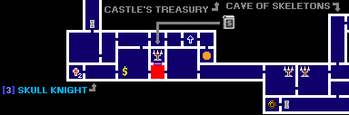
ห้องด้านซ้าย จะเก็บ Sylph Feather
ได้ ซึ่งทำให้สามารถกระโดดได้ 2 ครั้ง
เมื่อสามารถ Double Jump ได้แล้ว จะสามารถไปได้เพิ่มขึ้นอีกหลายแห่ง
ค้นหา Crushing Stone
ปราสาท B
เมื่อจัดการ Peeping Big ได้ ห้องด้านซ้ายล่างจะมี Crushing
Stone
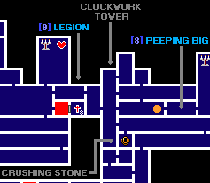
แต่ยังไม่สามารถเก็บได้ เพราะติดเครื่องจักรอยู่
ให้ลงไปด้านล่างและหมุนเครื่องจักร จะทำให้เครื่องจักรลดต่ำลงมา
กลับขึ้นไปก็สามารถเก็บ Crushing Stone ได้
เมื่อมี Crushing Stone จะสามารถทำลายกำแพงที่มีรอยร้าวบางแห่งได้
ให้กลับไปทำลายกำแพงที่ขวางทางอยู่ จะมีทางไปต่อได้อีกหลายแห่ง
ได้รับ MK's Bracelet
ในระหว่างนี้จะเจอ Maxim ในห้องด้านบนของ Corridor in The Air
เขาจะมอบ MK's Bracelet ให้
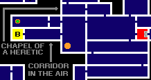
เมื่อได้ MK's Bracelet จะสามารถเปิดประตูสีส้ม ที่อยู่ด้านบนสุดของปราสาทได้
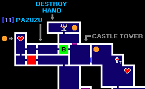
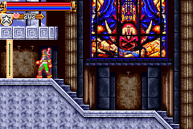
ค้นหา Floodgate Key
ปราสาท A
ใน Cave of Skeletons A บริเวณที่สู้กับ Legion Corpse
ด้านบนจะมี Floodgate Key ซ่อนอยู่
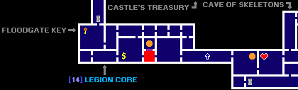
แต่การจะเก็บนั้นต้องใช้เทคนิคนิดหน่อย
เพราะต้องเรียงลังซ้อนกัน 3 ลัง ให้อยู่เยื้องๆ กันด้วย
แล้วผลักลังอันบนสุดไปด้านขวา เพื่อที่จะทำเป็นแท่นไว้กระโดด
ค้นหา Griffin's Wing และ
Skull Key
ปราสาท A
เมื่อเก็บ Floodgate Key ได้แล้ว นำไปใช้ที่ Moss-Grown Cave A
ที่ห้องด้านล่าง บริเวณที่ต้องต่อสู้กับ Talos
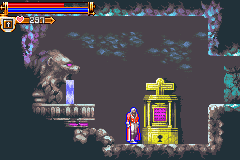
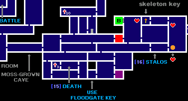
เมื่อใช้แล้วน้ำในห้องด้านซ้ายจะลดลง ทำให้สามารถเดินผ่านไปได้
ห้องด้านซ้ายหลังจากจัดการ Death ได้ จะมี Griffin's
Wing ซ่อนอยู่
เมื่อได้ Griffin's Wing จะสามารถทำ High Jump ได้
ห้องด้านขวา หลังจากจัดการ Talos ได้ ใช้ High Jump ขึ้นไปจะได้ Skull
Key
เมื่อได้ Skull Key จะสามารถเปิดประตูที่มีรูปหัวกระโหลกได้
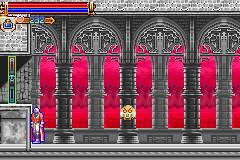
ค้นหา Lure Key
ปราสาท B
บริเวณ Entrance ด้านบนสุด จะมี Lure Key
ซ่อนอยู่
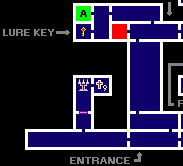
เมื่อมี Lure Key จะสามารถเปิดประตูที่มีสีสายรุ้งได้
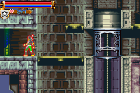
ค้นหา Crush Boot
ปราสาท B
ในบริเวณ The Approach of Deplore ด้านซ้ายสุด
จะมี Crush Boot ซ่อนอยู่
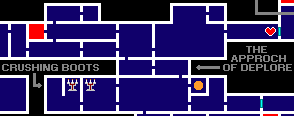
เมื่อมี Crush Boot และใช้คู่กับ High Jump จะสามารทำลายกำแพงที่ขวางทางอยู่ได้
ค้นหา Hand
ปราสาท A
ใช้ Crush Boot ทำลายกำแพงที่ขวางทาง จะสามารถปีนขึ้นไปส่วนบนสุดของปราสาทได้
บนนี้จะเจอ Hand ให้ทำลายมันซะ
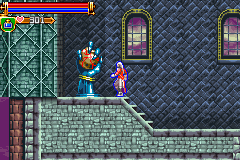
จากนั้นจะสามารถลงไปสู้กับ Maxim ที่บริเวณกลางปราสาทได้
Ending
เมื่อสามารถจัดการกับ Maxim ที่ปราสาท A ได้ ก็จะพบกับฉากจบ
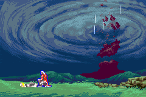
(Normal Ending)
Ending 2
ให้เปลี่ยนไปปราสาท B แล้วไปจัดการกับ Maxim อีกครั้ง จะพบฉากจบอีกแบบหนึ่ง
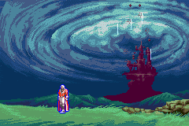
(Bad Ending)
Ending 3
หากสามารถรวบรวมชิ้นส่วนของ Dracula ได้ครบ (Relic ครบ)
ให้ไปสู้กับ Maxim ที่ปราสาท B อีกครั้ง
คราวนี้ให้สวมใส่ JB's Bracelet และ MK's Bracelet ด้วย
เมื่อจัดการกับ Maxim ได้ จะได้พบกับ Dracula หัวหน้าที่แท้จริง
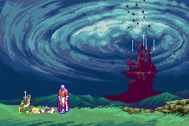
(Happy Ending)
|

{kind=link}